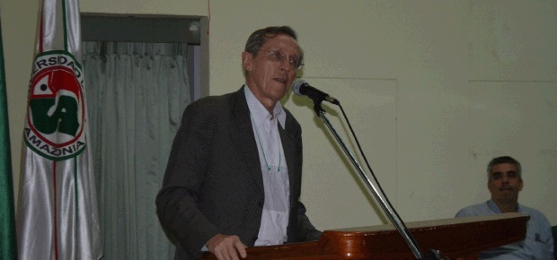

Primer Congreso Internacional de Paz, Democracia y Víctimas del Conflicto Colombiano
Realizado por FIUDESCO con ayuda de UNIAMAZONIA
Doctor, MIGUEL RAMÓN MEJÍA CAEZ
Actualmente es candidato a Doctorando en Derecho. Universidad Nacional de Lomas de Zamora. Buenos Aires, Argentina. Maestría/Magister Universidad Nacional de Lomas de Zamora En Derecho Procesal Constitucional. Presupuestos Organizacionales del Derecho Procesal Constitucional como Garantía y Protección de los Derechos Humanos en Colombia. Maestria/Magister Universidad Central de Chile y actualmente es Docente de Universidad Cooperativa de Colombia Sede Ibagué - Tolima- Colombia.
La Fundación Internacional Universitaria Para el Desarrollo Comunitario “FIUDESCO”, con el apoyo de la Universidad de la Amazonia, realizo el I Congreso Internacional de Paz, Democracia y Víctimas del Conflicto Colombiano. “Camino a unas Políticas de Reconciliación y Paz Duradera en el Pos - Conflicto". Dicho evento se llevó a cabo en la ciudad de Florencia, Departamento de Caquetá, Colombia durante los días 24 y 25 de noviembre del año 2014 en el auditorio Ángel Cuniberti de la Universidad de la Amazonia.
Este, el lugar donde confluyen las más diversa personalidades del ámbito nacional y la sociedad que construye tejido social por medio de espacios propicios para el debate y escenarios académicos; además del amor por la reconciliación y la solidaridad por las víctimas de los diferentes actores en Colombia, son los que dan la oportunidad para que durante dos días las regiones del país se encuentren representadas en este congreso del orden internacional en la puerta de oro de la amazonia colombiana. Este primer congreso cuenta con el apoyo de la cooperación internacional y otros actores, quienes durante décadas han insistido en una solución por la vía del dialogo del conflicto armado más antiguó y vigente del hemisferio sur. Por esto hoy elevamos un llamado a la sociedad civil presente en este auditorio, esperando ser de este un espacio único y proactivo para la discusión del tema que nos compete. Abordaremos temáticas que buscará romper paradigmas que existen en nuestra sociedad como el hambre, la pobreza, la desesperación y el caos, los mismos que actualmente no nos han permitido avanzar hacia el surgimiento de soluciones pacíficas.
Por lo anterior, Desde ya la Fundación FIUDESCO, convocó un grupo de expertos de las más altas calidades para presentar y hacer propuestas proactiva que generen en ustedes, los asistentes y los que nos siguen, procesos de aprehensión que fortalezca la crítica social y comunitaria. Un agradecimiento especial a los señores parlamentarios de la Unión Europea y del Parlamento Británico, quienes con gran sentido de pertenencia por la paz del país, han apoyado las actividades derivadas de este gran compromiso que se desarrolló y a la Universidades de la Amazonia. Esperamos que este espacio siga siendo un espacio de reflexión académico, social y político en su dimensión.
A continuación presentamos algunos apartes de su exposición en el marco de la participación como conferencista en el I Congreso Internacional de Paz, Democracia y Victimas del Conflicto Colombiano “camino a unas políticas de reconciliación y paz duradera en el pos- conflicto".
En algunos de mis libros digo lo siguiente: “del conflicto al acuerdo para la convivencia ciudadana”, yo creo que el acuerdo no es el posconflicto y les voy a decir porque no creo en el posconflicto, porque es que los únicos actores sociales en nuestro país no es la FARC, ni los ELENOS, ni el Gobierno Nacional; tenemos los estudiantes, como van los estudiantes, como van los afro descendientes, como van la población aborigen y los otros sectores que no tienen paliativo frente a ellos, como van. Por eso es que tenemos que plantear “como vamos a hacer el acuerdo”, y usted sabe que el acuerdo se construye entre partes, no la imposición de una parte sino la construcción de unos compromisos de quienes participan en el acuerdo en nombre de a quienes representan; por eso a veces uno dice: yo tengo que ir a CUBA para sentirme representado en estos acuerdos?, será que desde la región nosotros no podemos implementar acuerdos.
Colombia llora, no a los muertos, sino a la situación que vivimos, nos sentimos preocupados y esa preocupación tiene que tener una manifestación de parte de nosotros que somos los actores, unos más y otros menos, dentro de estos nombres Derechos Humanos, Convivencia Social y Solución de Conflictos. Debo manifestarles , utilizando un poco el lenguaje significativo, que voy a tratar de definir que son los derechos humanos, voy a tratar de ubicar que es eso de vivir en paz, porque la palabra convivencia es contario a la violencia, convivencia significa vivir pacíficamente, y la solución del conflicto que yo planteo a través del acuerdo: ….. Que son los DERECHOS HUMANOS: … bueno y porque hoy se habla de los derechos humanos, porque se convirtió en el eje central, no porque las FARC y el Gobierno estén hablando del posconflicto o porque Miguel Mejía esta hablando de acuerdo, NO¡ los derechos humanos se convirtieron en una obligación de las sociedades modernas, de estas sociedades del siglo XXI, pero no los derechos humanos que proclamo la revolución Francesa que fueron derechos formales, estaban escritos, no tenían dinámica, eran derechos que se quedaban únicamente en la aspiración y es marcado dentro del concepto, ese que nosotros conocemos todavía y que algunos aplicamos sin conocimiento, que es el concepto de “ la soberanía”; ese concepto hoy ha dejado de existir y ha dejado de existir por este nuevo concepto: “ Los Derechos Humanos”. Ya los Derechos Humanos no son simplemente los Derechos Humanos, son o es el nuevo derecho: “Derecho de los Derechos Humanos”. Por eso en todas partes y en todos los rincones nos preguntan por los derechos humanos, pero a veces no podemos dar respuesta porque no nos hemos preparados en derechos humanos, pensamos que los derechos humanos es una cuestión de la naturaleza del individuo, si perfecto ¡ pero es que el derecho natural dejo de existir para entrar en el derecho positivo, en el escrito, en el derecho normatizados, eso no significa que los derechos que no estén escritos en la constitución no se puedan aplicar.
Parto después de la segunda guerra mundial periodo de la posguerra, comenzaron a aparecer tribunales a nivel de países que perdieron la guerra, y esos tribunales tienen una connotación fundamental y era la protección de los derechos de las personas. Eso implicó en que muchos ordenamientos jurídicos de América Latina y el mundo se incorporarán la nueva teoría de los Derechos Humanos, por eso en la constitución del 91 aparecieron los Derechos Humanos, no vayan a pensar que fue una obra magistral de nuestros constitucionalistas o de los que participaron en la asamblea nacional constituyente, era un mandato universal, era una obligación de incorporación, porque ya en otros ordenamientos de América Latina se habían materializados los derechos humanos, en ese marco de ideas le damos paso a lo que hoy la nueva teoría de interpretación del derecho humano llama que hay que tener en cuenta dos elementos en materia de derechos humanos, el concepto de la dignidad de las personas… es reconocer los propios derechos, mis derechos, por eso se llaman derechos humanos.
El derecho es de obligatorio cumplimiento de todo ciudadano, pertenece al campo axiológico, son principios como conductas repetitivas de las personas, en una región, en un tiempo determinado…. cual es la costumbre nuestra? Para ver qué tipo de derecho tenemos que aplicar a los Colombianos; otros dicen son demandas y para que esas demandas se vuelvan realidades hay que accionar. En todo caso sea cual fuere la definición, los derechos humanos hacen parte de la esfera interna (subjetividad) y externa del ser humano. A veces no le prestamos atención a la subjetividad y es tan importante; cual son las condiciones que requerimos para lograr nuestros propósitos, la subjetiva, el hecho de ser persona, hace que uno sea persona, es el reconocimiento de nuestra personalidad jurídica.
En el marco del desarrollo del I Congreso Internacional de Paz, Democracia y Victimas del Conflicto Colombiano “camino a unas políticas de reconciliación y paz duradera en el pos- conflicto” el senador ANTONIO NAVARRO WOLF, comenta lo siguiente:
EN EL I CONGRESO SOBRE VICTIMAS DEL CONFLICTO Y PAZ EN EL posconflicto se hace una reflexión del momento actual del proceso de paz, pero sobre todo el posconflicto. Creo que el posconflicto que no hemos hecho hasta ahora en el país, hasta ahora se han hecho algunos acuerdos de paz y medio de han cumplido, pero no habido un esfuerzo grande de consolidarla y lograr que termine totalmente, que no se vuelva a repetir; que no sea que sale un grupo y luego llegue otro a ocupar el sitio que dejo. Esa reflexión del posconflicto hay que hacerla bien hecha y hay que prepararla con anticipación; sino se prepara con suficiente anticipación, lo que nos va a pasar es que, como todo a “La Colombiana”, hacemos todo a última hora, no lo vamos a hacer bien y causamos el riesgo entonces que el posconflicto no permita una consolidación de una finalización de toda la violencia asociada a razones políticas en el país. Eso es lo que queremos, es lo fundamental. En Colombia tenemos una violencia grande, empezó una violencia liberal Conservadora que luego se ha ido transformando, pero ya es hora que empiece a retroceder de manera definitiva y eso requiere una buena preparación en el posconflicto.
Sin duda que todos tenemos que poner nuestro grano de arena, hay que pensar primero, eso parece obvio, no siempre se hace, hay que pensar, hay que planear, hay que encontrar las líneas de acción más importante en cada región, hay que encontrar la plata para poder pagar y resolver los problemas financieros asociados a esa acción; y luego creo que desde la académica se tiene que incorporar actores del conflicto. En el M-19 una de las cosas que mejor funcionó fue la educación, la mayoría fue de educación simplemente secundaria, pero también una educación de miembros de nuestra organización fueron a la universidad y hoy son profesionales. La educación es un mecanismo de mejoramiento de un ser humano y por eso tiene que ser uno de los elementos esenciales del posconflicto.
Como se ha dicho se va a firmar es el fin del conflicto, la paz hay que construirla después, a veces a la paz le metemos “todo” y terminamos haciendo una cosa sin querer queriendo como dice el Chapulín Colorado; y es justificando la guerra porque hay algo no está funcionando bien, ¡no..no¡ la guerra no tiene justificación, la guerra no tiene justificación porque no es eficaz, la guerra no resuelve problemas; entonces decimos: ¡No…mientras haya habiendo tanta desigualdad, pero entonces va seguir habiendo conflicto… No Señor¡. Los problemas de desigualdad no lo vamos a resolver con lanzamientos armados, los vamos a resolver con luchas políticas, con múltiples maneras de buscar soluciones, pero no son el lanzamiento armado, por eso yo creo que hay que entender que el fin del conflicto lo fundamental es que deje atrás el uso de la violencia armada para resolver problemas y afronta unas realidades, el país tiene que cambiar, pero tiene que cambiar pacíficamente con métodos que no son el uso de las armas.